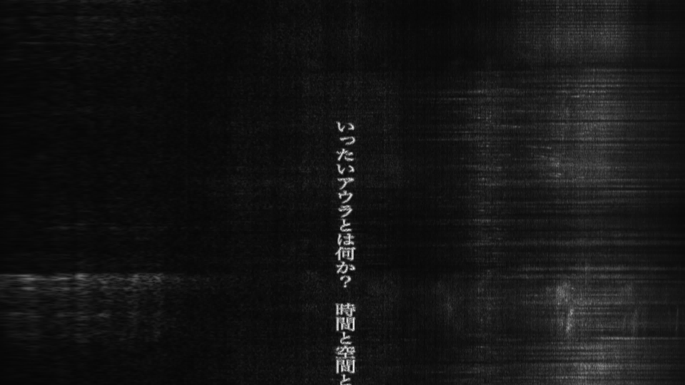
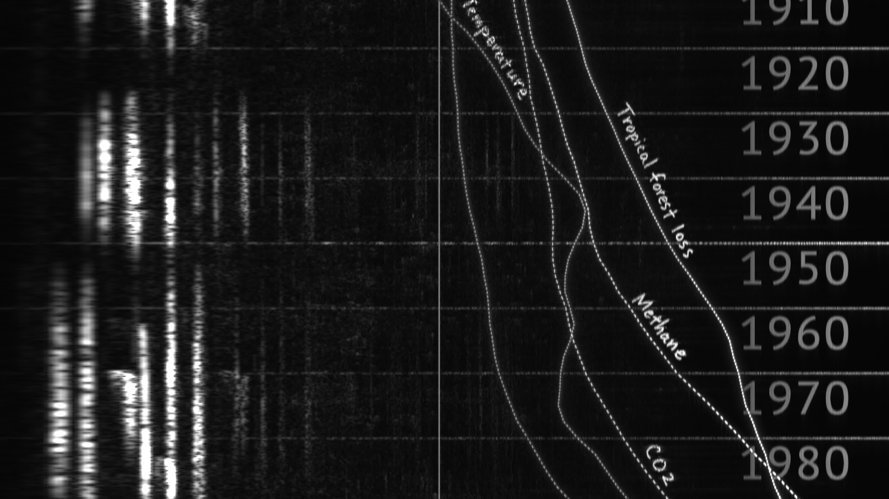

- 
- 
/Works/////////////////////////////////////////////////////////////////////////////////////////////////////////////////////////
ナハトムジーク | Nachtmusik
1次アンビソニックオーディオ、シングルチャンネルヴィデオ / 21分 / 2023
First Order Ambisonics audio, Single channel video / 21min. / 2023
《ナハトムジーク》は下から上へスクロールするスペクトログラムによる映像をともなう音響作品である。この作品のすべての視覚要素は制作された音響のスペクトル分析から得られたイメージであり、そのときに流れている音と厳密で機械的な対応関係にある。本作の主題は聴覚における自然の表象であり、「自然の音」の神秘的なアンビエンスに対する批判的な考察である。作者の問いは、サウンドスケープやフィールドレコーディングといった聴覚的な概念や実践がエコロジーと親和的であるとみなされているのはなぜか、というものであるが、そこで浮上するのは音楽の非表象性というロマン主義の神話である。
「ナハトムジーク」解題
まず、私は電子音楽を作曲した。そのあと、高速フーリエ変換（FFT）という技術を用いて、書き出したオーディオファイルに含まれる周波数成分とその時間軸上の変化を平面にマッピングした画像——いわゆる「スペクトログラム」——を生成し、その画像がオリジナルの音声に合わせて下から上へスクロールする映像作品に仕上げた。つまり、私はある音声の分析から得られたデータの機械的な出力を、そのまま「作品」として提示しようとしている。ただし、分析対象である音声には、入念に設計された不自然な形態が含まれている。FFTおよびスペクトログラムは、今日ではありふれた技術である。スマホアプリのスペクトログラムアナライザーなどでこの作品の音声を分析すれば、そこには本作の映像とほぼ同型のイメージが映し出されることだろう。この音は「見られる」ことを前提に作られている。
ある事物やデータに基づく表象が、それらしく、ありありとして説得力を持つということは、元の事物やデータの真性さとは別の次元に属する。言わずもがな、それはときにある種のイデオロギー装置として機能することがある。観察者／対象、主体／客体、人間／自然、視覚／聴覚——このような悲しむべき諸分断が技術によって解消されるだろうという楽観的観測は、今日の有力なイデオロギーのひとつである。しかし、「分断」はそもそも存在しなかったとしたらどうだ？
この作品の主題は聴覚における自然の表象である。直接的には、原生自然の環境音から得られたスペクトログラムがウィリアム・ターナーの海景画を思い起こさせたという、サウンドスケープ・エコロジーの研究者バーニー・クラウスの述懐から想を得ている。クラウスの言葉は、現実と幻想の境界がかすんだ、共感覚的で曖昧な雰囲気に包まれているが、そこで「自然」は遥か彼方に遠ざかり、私たちは原初の楽園への不可能な回帰を切望するように仕向けられる。「アンビエンスは、資本主義的な疎外の徴候である」（ティモシー・モートン）。
本作における「ナハトムジーク（夜の音楽）」とは、視覚その他の感覚を排除した「純粋な聴取」への憧憬であり、音楽は指示対象を持たないがゆえにある種の「直接的な」経験を聴く者に与えるとするロマン主義の音楽美学を表している。他方で、それは夜の野外演奏会のための楽曲であり、自然環境の美的な観照である。作品の主要な構成要素のひとつである、昆虫や小動物の鳴き声、川のせせらぎや気象現象といったフィールドレコーディングを思わせる音響はのほとんどは、電子的に合成されたものである。それらは対象化され美学化された「自然の音」の表象である。
作中に現れる断片化したシンボルは、実際に路上に廃棄されていた包装容器からスキャンした文字や記号で、このような環境に浮遊したテクストは、現代の託宣あるいは環境の言語を人知れず構成している。これらのあからさまな視覚的なシンボルも、スペクトログラムに変換したときに特定の形をなすよう逆算して作られた合成音で、オーラル（話されるもの＝聴覚的なもの）／リテラル（書かれたもの＝視覚的なもの）という古典的な対立を異化させる。
「見られる」ことを前提に音を構成するという行為は、前述したロマン主義的な音楽＝聴覚理解と、ジョナサン・スターンが「視聴覚連騰」と呼ぶ感覚の体制への批判からヒントを得ており、同時に、カスパー・フリードリヒの有名な風景画をイメージシンセシスによって引用することによって、自然環境をその雄大さ、崇高さによって神秘化するロマン主義的な言説を、現代のエコロジーと聴覚文化が無批判に受け入れていることを示唆している。このことはまた、今日では広く人口に膾炙している「サウンドスケープ」というマジックワードに対するアイロニーでもある。ヴァルター・ベンヤミンによるアウラの定義は、いくぶん中産階級的な自然の経験に備わったものであったが、私たちは録音された「自然の音」に新しいアウラ＝アンビエンスを期待している。なぜなら音には「表象」がなく、私たちは本物の主人の声と複製音との見分けがつかないビクター犬と本質的になんら変わりはない、とされているからだ。
作品の最終部はデータビジュアライゼーションと「人新世」に対する考察である。スペクトログラムというそれ自体科学的な視覚様式に折れ線グラフを表示させるという倒錯した試みである。グラフには、気温、二酸化炭素、熱帯雨林の減少などといった断片的な書き込み（その「文字」もまた音である）がされており、実際の科学論文から抜き出したものではあるが、重要なのはその典拠や正確さではない。「ジェネレーション・レフト」とは、東西冷戦を知らない人々、「メディアアート」と新自由主義とともに育った人々であり、かれらの出生を言祝ぐ言葉は「いらっしゃいませ」であった。私は抑鬱状態と未来へのノスタルジーで本作を締めくくることになった。
（2023年6月25日最終更新）